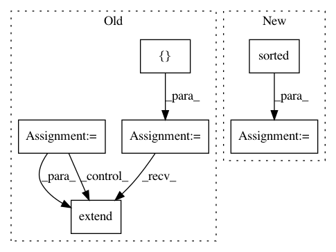

327a8d989f986623b258d5926142333d80697e4c,src/python/pants/init/options_initializer.py,OptionsInitializer,_install_options,#OptionsInitializer#Any#Any#,98
Before Change
from pants.bin.goal_runner import GoalRunner
// Now that plugins and backends are loaded, we can gather the known scopes.
known_scope_infos = [GlobalOptionsRegistrar.get_scope_info()]
// Add scopes for all needed subsystems via a union of all known subsystem sets.
subsystems = Subsystem.closure(
GoalRunner.subsystems() | Goal.subsystems() | build_configuration.subsystems()
)
for subsystem in subsystems:
known_scope_infos.append(subsystem.get_scope_info())
// Add scopes for all tasks in all goals.
for goal in Goal.all():
known_scope_infos.extend(filter(None, goal.known_scope_infos()))
// Now that we have the known scopes we can get the full options.
options = options_bootstrapper.get_full_options(known_scope_infos)
self._register_options(subsystems, options)
// Make the options values available to all subsystems.
After Change
build_configuration.subsystems() |
set(Goal.get_optionables()))
known_scope_infos = sorted({
si for optionable in top_level_optionables for si in optionable.known_scope_infos()
})
// Now that we have the known scopes we can get the full options.
options = options_bootstrapper.get_full_options(known_scope_infos)
In pattern: SUPERPATTERN
Frequency: 3
Non-data size: 6
Instances
Project Name: pantsbuild/pants
Commit Name: 327a8d989f986623b258d5926142333d80697e4c
Time: 2018-03-09
Author: benjyw@gmail.com
File Name: src/python/pants/init/options_initializer.py
Class Name: OptionsInitializer
Method Name: _install_options
Project Name: hellohaptik/chatbot_ner
Commit Name: 34f14dac8d65ffd6210a87a610afad1593d47294
Time: 2019-06-18
Author: jain.chirag925@gmail.com
File Name: ner_v1/detectors/numeral/budget/budget_detection.py
Class Name: BudgetDetector
Method Name: __init__
Project Name: pantsbuild/pants
Commit Name: e1d16a817ccbdfdc9d5d6b975db15e2d7151dba5
Time: 2019-04-18
Author: ericarellano@me.com
File Name: src/python/pants/backend/python/tasks/select_interpreter.py
Class Name: PythonInterpreterFingerprintStrategy
Method Name: compute_fingerprint